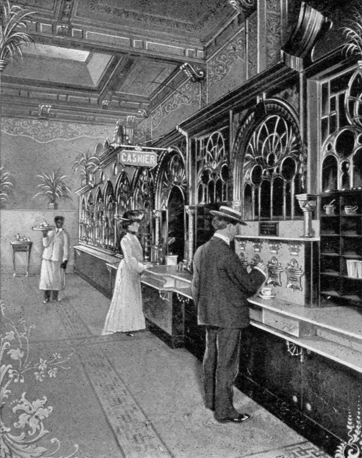
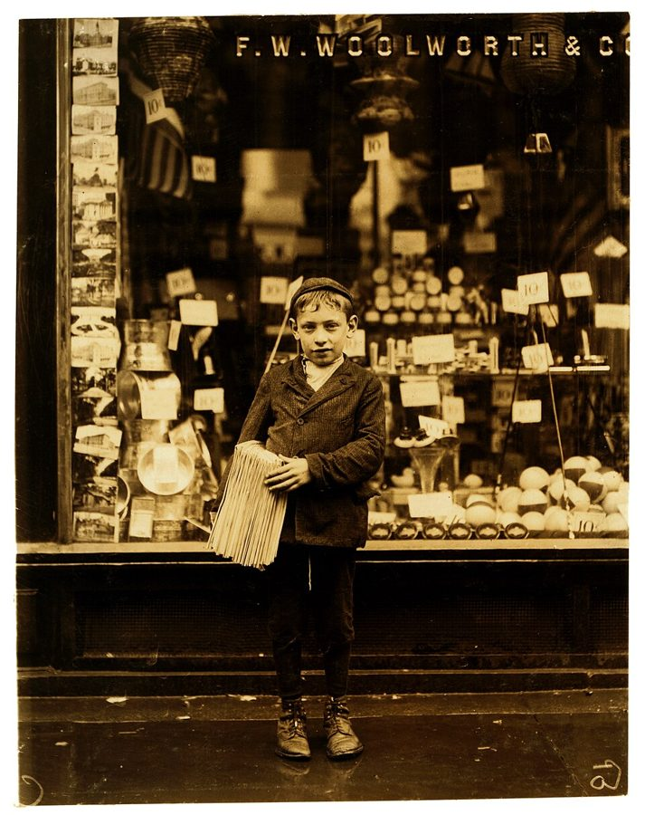

这一页在做什么
从十三岁写到高中毕业。初中时他在一家女帽厂打工，偷学会了开缝纫机，后来有人向劳工部举报厂里用童工，他丢了这份工；接着是一长串零活，还用工钱买了一股 Pepsi。高中时一位英文老师当众把他骂醒；妹妹十六岁怀孕，母亲把外孙留在家里养。读的时候抓两条线：他怎么看十几岁打工这件事，包括那次举报；家里和学校的大人怎么管他。

费城栗子街 818 号 Horn & Hardart 的自动餐厅（automat），二十世纪初的明信片（维基共享资源标为 1904 年）。这家连锁店 1902 年在这里开了第一家自动餐厅。§5 第 62 段：上高中以后，他在这家公司的几间餐厅里收碗、洗碗。作者不详，公有领域（1930 年以前在美国出版），维基共享资源 读之前：这一页在他一生的哪里
上一页停在初中：他刚在帽厂找到放学后的活，为了保住它还对老板撒了个谎。这一页接着讲帽厂，一直写到高中毕业后去洛杉矶看父亲。这一章只说他一月毕业（§6 第 89 段），第 7 章写明是 1954 年。这几年是二战后的繁荣期，中间还打了一场朝鲜战争（1950–1953）。一家人仍住在北费城的 Richard Allen 公共住房。
读的时候带着这几个问题。不用先找答案，读完回来对照「检查一下理解」。
有人去劳工部举报，他丢了帽厂的工作。他凭什么断定举报的人「不是为他好」？这个判断有几分是推测？§4
他说那时候想打工的孩子都找得到活。他拿什么作证？今天为什么不一样，这一页说了没有？§5
老师当众痛骂、学校说他不配去好高中，他几十年后都说「对」。他为什么这样看？§6
分节地图
这一页是原书第 1 章的后三节。粗体是这一节的地标；斜体是英文这一节开头的几个词，在 Kindle 里搜它就能跳到那里，错字照电子书原样。读完打个勾。
U-Needa-Hat 女帽厂，偷学缝纫机约 900 词 Delivering hats and doing other odd … 按件计酬、周日该不该上班、被举报丢工。第 60 段是这一页经济学的起点。 球童、小贩、自助餐厅、一股 Pepsi约 1100 词 I've forgotten just how Mr. Friedman told … 一串零工和第一次买股票；第 66–67 段拿当年比今天，第 68 段起是午饭钱。 Benjamin Franklin 高中，妹妹的孩子约 2700 词 In 1951, I graduated from … Rosenberg 的痛骂、成绩单、去洛杉矶；第 95 段起是妹妹怀孕和 Leonard。
出场的人
按出场顺序。书里的家人和老师只写书里说的。
Jack Friedman 帽厂老板，上一页出过场 第 52 段起：雇他送货打杂，旺季让他在周末干大半天。他和太太派作者去熟食店买三明治，总给他也买一份。第 57 段问他：停下赚钱去花钱，说得过去吗？
女裁缝们 书里没写名字 厂里的熟练工。第 53 段起作者看她们给帽坯缝铁丝，自己偷偷学会了。第 60 段：有员工向劳工部举报厂里违反童工法，作者认为是女裁缝们嫌他抢活。
Sam Friedman Jack 的儿子 第 55 段和作者两人一组压帽子。第 56 段旺季有两个女裁缝没来，作者主动上机，Jack 和 Sam 看他缝了几分钟、指点了一两处，才放了心。
Aunt Frances 作者最喜欢的一位阿姨 第 58 段：是她说动了母亲，让作者跟表哥去擦皮鞋。第 102 段帮着带 Leonard，那里拼成 Francis。
Carl Green 作者的表哥，上一页出过场 第 58 段带他擦皮鞋；第 61–62 段两人一起当高尔夫球童、铲雪、收瓶子，圣诞节替邮局送信。
证券行的推销员 作者早忘了名字 第 63–64 段：跟他说股票比吸尘器更有用，从他的工钱里替他买了一两股 Pepsi，没收佣金，作者猜是推销员自己垫的。
Mom 作者的母亲，上一页出过场 这一页里：不借午饭钱（第 69 段），拿着成绩单跟他回学校找老师（第 86 段），不签字让他参加空军（第 88 段），把外孙抱回家养（第 101 段）。1958 年再婚，作者叫继父 Pops（第 102–103 段）。
Dr. Martin Rosenberg 高中英文老师 第 74 段起：每周两次早上八点开不算学分的「大学辅导班」；正课上给全班念古典文学（第 76 段）。作者说他喜欢自己、对自己影响很大。第 81 段当众把作者骂了一顿。
Katherine Morgan 作者的外祖母 第 89–91 段：作者是她五个孙辈里最得宠的。在弗吉尼亚 Newport News 长大，父亲 Daniel Pettus 是获得自由的奴隶、木匠；她帮佣的东家来费城一带度假，她在那里认识 James Morgan，嫁给了他。
父亲 书里没写名字 第 92–94 段：孩子们快成年，不再怕因为不付抚养费被起诉，回费城就不躲了。衣着讲究、开好车、能说会道，出钱请作者毕业后去洛杉矶玩。
Claire 和 Louise Bobo 父亲再娶的妻子和她的姐妹 第 94 段：在洛杉矶待作者很好，作者说至今还是好朋友。
Catherine 作者的妹妹，上一页出过场 第 95 段起：十六岁怀孕，退了学，1953 年 9 月生下 Leonard，孩子由母亲养大。后来做过毛衣厂的季节工，拿到同等学力，进了邮局，读完 Cheyney 大学，1978 年去洛杉矶当小学老师。
背景：作者默认你知道的事
按在书里出现的顺序排，标题前是节号。这里只讲事情本身，作者怎么看放在后面几节。
§4 五毛钱一小时，和按件计酬第 52 段他记得自己每小时挣 50 到 75 美分。按美国劳工统计局的消费者物价指数，1949 年的 50 美分约合 2025 年的 6.8 美元，75 美分约合 10 美元。联邦最低工资当时是每小时 40 美分，1950 年 1 月起提到 75 美分。计件工资（piece rate）按做出的件数付钱，帽厂按「打」算：手快的人多拿，雇主只为做出来的东西付钱。第 55 段他说压帽子按件算，比按小时挣得多。
§4 童工法和劳工部
1910 年 6 月，Lewis Hine 在费城拍的十岁报童。他替全国童工委员会拍了几千张这样的照片，用来推动童工立法。与本书无关。Lewis Hine，公有领域，维基共享资源 二十世纪初，美国的童工改革者一州一州地推立法。联邦层面 1938 年的《公平劳动标准法》（Fair Labor Standards Act）把一般的最低工作年龄定为 16 岁，危险工种 18 岁；14、15 岁只能在课余做非制造业、非采矿的轻活。各州另有自己的童工法。第 60 段说的 department of labor，书里没说是联邦的劳工部还是州的劳工厅。第 56 段他十三四岁就在工厂里开动力缝纫机，这正是这类法律要管的。
§4 Willow Grove 游乐园费城北郊的游乐园，1896 年由一家有轨电车公司开办，为的是周末多拉乘客，这类园子叫 trolley park。它一直开到七十年代中期，原址 1982 年改建成了购物中心 Willow Grove Park Mall。第 57 段，他本想周日带女朋友去这里玩。
§5 自动餐厅和邮购商店Horn & Hardart 是费城起家的餐饮连锁，1902 年在费城开了第一家自动餐厅：墙上一排小玻璃窗，投币开门取菜，后厨从背面补货。后来开到纽约，五十年代是两座城市的日常去处，最后一家 1990 年关门。Sears, Roebuck 是当时美国最大的零售商之一，靠邮购目录起家；它 1920 年在费城东北的 Roosevelt 大道建了邮购配货中心，1993 年停办目录后关闭。第 62 段他在那里打包订单。
§5 一股 Pepsi 和 Wellington 基金一股（a share）是一家公司的一份所有权，买卖要经过证券行，按笔收佣金（commission）。共同基金（mutual fund）把很多人的钱合起来，由专人分散投资。Wellington Fund 是二十年代末在费城成立的老牌基金，今天还在，叫 Vanguard Wellington。The Philadelphia Bulletin（《费城公报》）是当时费城的大报，晚报，1982 年停刊；第 65 段他开始看它的财经版。
§6 Central 和 Benjamin Franklin
费城 Central 高中今天的校舍正门，Olney 大道 1700 号，2009 年摄。§6 第 84 段：母亲想让他转到这里。Audrey（Wiki Takes Philadelphia），CC BY-SA 3.0，维基共享资源
Central High 1836 年创办，按成绩择优录取，是费城的老牌名校，书里说它学业排名第一。1939 年前后它搬进上图这栋新楼，把 Broad 街和 Green 街路口的旧校舍留给了 1939 年新开的 Benjamin Franklin 高中。Franklin 是北费城一所男校（1979 年起收女生）；书里说它在全市学业排名垫底。第 84 段说转校就像「让兔子去跑赛马」，说的就是这两所学校的差距。
§6 一月毕业，第二名致辞那时费城的学校一个年级分上下两个半年（见上一页的背景），所以有一月毕业的学生。美国高中毕业典礼上，成绩第一的学生致告别辞（valedictorian），第二名致开场辞（salutatorian）。第 82 段他被选上致开场辞。
§6 怀孕的女生，同等学力，Cheyney
Cheyney 大学校园里的 Biddle Hall，2014 年摄。§6 第 106 段：妹妹 Catherine 在这里读完了小学教育的学士。Raymgeez，CC BY-SA 4.0，维基共享资源
七十年代以前，美国公立学校常把怀孕的女生劝退或赶走。1972 年的《教育法修正案》第九条（Title IX）禁止性别歧视，1975 年的实施细则明确规定不能因为怀孕把学生排除在外。同等学力文凭一般叫 GED（General Educational Development），作者写成 General Equivalency Degree。Cheyney（书里拼成 Cheney）在费城西边，1837 年创办，是美国最早的传统黑人大学。
先用中文过一遍：这一页的经济学
作者讲到经济学的地方，这里先从书外把道理讲一遍：它是什么、经济学一般怎么分析。它在这一页起什么作用，看每块最后一句。讲过的概念都汇总在经济学概念 。
§4 机会成本 opportunity cost 做一件事的真正代价，是为它放弃的那件最好的别的事。周日去游乐园，花掉的不只是门票和车费，还有那天本来能挣到的工钱。程序员熟悉这个算法：一个下午拿去修 A，代价就是那个下午没做成的 B。这个概念不告诉你该怎么选，只提醒你把看不见的那一项也记上账。教科书第一章就讲它，争议不在概念本身，而在人们实际做决定时常常忘了算它。
在这一页： §4 第 57 段，Friedman 问他停下赚钱去花钱划不划算。作者没用这个词，是本站借这个故事讲的。
§4 用法规挡住竞争者 barriers to entry / rent-seeking 进入壁垒指让新来者难以进入一个市场的东西，有的来自技术和成本，有的来自法规：执照、资格、年龄、工资规定。已经在场内的人常有动机支持这类法规，因为挡住新人就少了竞争，保住了自己的收入。花力气去争取这种保护，经济学叫寻租（rent-seeking）：Gordon Tullock 1967 年讲清了道理，Anne Krueger 1974 年起了这个名字。主流承认这种动机存在；争议在于一条具体的法规主要是保护了弱者还是在位者，要一条一条看证据。
在这一页： §4 第 60 段，作者认为举报他的女裁缝是怕竞争。他没用这些术语，是本站点出来的；后面讲职业执照 和 Davis-Bacon 法 时还会用到。
§5 青少年打工和在职培训 teen jobs / on-the-job training 经济学多从「人力资本」看第一份工作：挣钱不多，学到的是守时、听安排、和人合作、对顾客负责，这叫在职培训。雇主肯雇没经验的人，是因为工钱低到能抵掉教他、等他出错的成本，等于新手用低工资换培训。争论有两处：打工是挤掉了学习，还是帮孩子以后更好找工作；青少年就业的起落，主要看经济景气、上学的时间，还是最低工资 这类价格下限。
在这一页： §5 第 66–67 段，作者拿自己那一代比今天北费城的孩子。机会为什么没了，这一页没说；他的解释在后面讲最低工资的地方。
初中，约 13 岁起
零活（没写哪年）
高中
擦皮鞋，和表哥一起
U-Needa-Hat 女帽厂
送货、压帽子、缝帽坯
约两年后被举报，丢工
高尔夫球童、摘蓝莓
跟小贩卖菜、铲雪
退瓶子、卖废品
自动餐厅收碗洗碗
圣诞季送信、Sears 打包
证券行打杂，买 Pepsi
§4–§5 第 52–65 段。帽厂的工钱约每小时 50–75 美分
本站示意图：这一页里他打过的工。中间那栏是第 61 段列的「其他零活」，书里没说哪年干的，不一定排在帽厂和高中之间。 作者的论证，一步一步
四五十年代，一个孩子挣钱的门路很多，丢了帽厂的工，还有一长串别的活可干。§5 第 61 段
他在自己的研究里报告过：那时黑人青少年的失业率略低于白人，参加劳动的比例也更高。§5 第 66 段
他认识的同学和朋友，想工作的都找到了这样那样的活。§5 第 66 段
民权运动成果这么大，今天北费城的孩子却没有他当年的打工机会，他称之为极大的悲剧。§5 第 67 段
早早工作带来半独立的自尊和自信，也教会孩子以后当好员工的态度和习惯。§5 第 67 段
对上烂学校、没有父亲的孩子，这一点尤其要紧：他们要学到有用的本事，只能靠在职培训。§5 第 67 段
童工法和工作规定，挡住的是谁
主流看法： 童工法被普遍看作保护孩子安全和学业的基本规则。经济史学者 Carolyn Moehling（1999）则发现，二十世纪初美国童工的减少，州童工法的年龄限制解释不了多少。寻租理论则提醒，劳动法规常有在位者推动、挡住竞争的一面。
作者的看法： 举报他的女裁缝不是为他好，是不喜欢竞争（§4 第 60 段）；他还半带调侃地说，今天让十三四岁的孩子靠近动力机械简直是疯了（第 56 段）。
本站的评论： 亲身经历让这个故事有说服力，但它只能说明这一件事。举报人的动机是他推断的，书里没有她们的说法。动机和规则是两个问题：就算举报的人存了私心，十三四岁的孩子在工厂开动力机器，本来就是童工法要管的；一条法规也可以既保护了孩子，又顺带挡住了便宜的竞争者。读到后面讲执照和工资法的地方，可以记着这个区分。
十几岁打工，值不值
主流看法： 经济学家大多同意早期工作经验有价值。Sara Heller 2014 年在芝加哥的随机实验里，给穷困街区的高中生安排八周暑期工，之后 16 个月里暴力犯罪被捕少了约四成。也有人担心打工太多会挤掉课业。
作者的看法： 早早工作带来自尊、自信和做工的习惯，对上烂学校、没有父亲的孩子是唯一的在职培训（§5 第 67 段）。
本站的评论： 「打工有好处」这一半，和主流看法、后来的实验大体一致，书里还有他自己一长串的活作证。弱的是另一半：「今天的孩子没有机会」，这一页只给了结论，没给今天北费城的数据，也没说原因。今天青少年做工的比例确实低了很多，但其中一大块是更多孩子在上学（见「对照今天」）。原因要等他后面讲最低工资时才摆出来，那时再判断。
词与短语
你用 Kindle，单个生词长按就能查，这里只收词典帮不上的：每个词都认识、合起来不懂的说法，口语和俚语，那个年代的说法，反话。斜体小字是原句里连续的几个词，错字照电子书原样，搜它就能跳到那里。点「记下」收进词本。
§4 U-Needa-Hat 女帽厂，偷学缝纫机
odd jobs
… doing other odd jobs at U-Needa-Hat …
零活，杂活
odd 在这里是「零散的、不固定的」，不是「奇怪」。
fringe benefits
… Plus, there were fringe benefits, such …
额外的好处
正式说法指工资以外的福利（保险、养老金）。他拿来指老板请吃的三明治，是开玩笑。
knish
… buy sandwiches, knishes, and pickles …
（犹太小吃）油酥馅饼
面皮裹土豆泥等馅，烤或炸。东欧犹太移民带到美国的街头小吃。
What better way to a growing boy's heart than food?
… What better way to a growing …
要讨一个长身体的男孩欢心，还有什么比吃的更好？
套的是俗话 The way to a man's heart is through his stomach（要抓住男人的心，先抓住他的胃）。
quitting time
… little to do before quitting time …
下班时间
quit 在这里是「收工」，不是「辞职」。
hat form
… try sewing wire onto hat forms …
帽坯，帽子的骨架
先压出帽坯，再缝上铁丝定型，最后蒙面料。
fool around with
… months of fooling around with the …
摆弄，瞎鼓捣
fool around 也有「鬼混」的意思，这里只是自己没事去摸索机器。
buckram
… a material called buckram, which is …
硬衬布
上过浆或胶的粗棉布、麻布，打湿后能压出形状，干了就硬。
die
… fitted with different dies in the …
模具，压模
复数 dies。不是「死」，也不是骰子（dice）。
piece rate
… I was paid the piece rate …
计件工资
见「背景」。
own up to
… That's when I owned up to …
（把自己干的事）坦白承认
他承认的是自己一直偷着摆弄厂里的缝纫机。
border on lunacy
… Today it would border on lunacy …
近乎疯狂
border on 是「接近于」。这句放在括号里，口气半带调侃：他不是在检讨当年危险，而是在说今天的人会怎么看。
power machine
… near a power machine, much less …
动力机械（电动的机器）
much less
… much less to operate it.
更不用说
接在否定的意思后面：连靠近都不行，更不用说去开了。
talk someone into
… to talk her into allowing me …
说动某人去做
child labor laws
… in violation of child labor laws …
童工法
见「背景」。
§5 球童、小贩、自助餐厅、一股 Pepsi
caddy
… accompanying cousin Carl to caddy at …
当（高尔夫）球童
替打球的人背球包、递球杆，按场拿钱和小费。Cobbs Creek 是西费城一座公营球场。
farm bus
… taking the farm bus to pick …
农场接送工人的大巴
huckster
… working with a huckster peddling fruits …
沿街叫卖的小贩
本义就是推车卖菜的。今天多指油嘴滑舌的推销员、骗子，带贬义，这里没有。
commission
… I earned a commission based on …
提成，佣金
按卖出的筐数拿钱。不是「委员会」。
when worse come to worst
… When worse come to worst, we …
实在没办法的时候
通常说 if worse comes to worst 或 when worst comes to worst，这里是口语的变体。
claim the deposit
… store to claim the deposit, or …
退瓶子拿回押金
那时汽水、牛奶瓶要收押金，空瓶送回店里能退钱。孩子们到处捡空瓶换零钱。
busboy
… worked as a busboy and dishwasher …
餐厅里收碗碟、擦桌子的杂工
mail-order department
… Boulevard mail-order department packing orders for …
邮购部
顾客看目录下单，商店把货打包寄去。见「背景」。
your people
… sell your people a shiny vacuum …
你们这些人（指黑人）
作者紧接着说当时不算冒犯。今天听来居高临下：把对方当成一个群体的代表；整句话还暗含「你们宁可买亮闪闪的家电，也不懂买股票」的刻板印象。
tied up in
… money I had tied up in stock …
压在……里（一时动不了）
tie up 钱，是把钱投进去、不能随时拿出来用。
The Philadelphia Bulletin
… the The Philadelphia Bulletin to keep …
（报纸）《费城公报》
屏幕上多了一个 the，原书印的就是这样还是转换出的错，看不出来。见「背景」。
mutual fund
… in the Wellington Mutual Fund
共同基金
见「背景」。
active in the labor force
… more active in the labor force …
参加劳动的比例高
labor force 是在工作或正在找工作的人。这里说的是经济学的「劳动参与率」，不是「更卖力」。
rotten schools
… who attend rotten schools and live …
烂透了的学校
rotten 本义「腐烂的」，口语里骂东西糟糕。作者说话一向这么直。
on-the-job training
… have to come through on-the-job training
在职培训
见「经济学」。
child abuse
… might easily be considered child abuse …
虐待儿童
带讽刺的夸张：他讲的只是母亲不借午饭钱。意思是按今天的标准会被说成虐待，他自己不这么看：第 70 段说他学到了教训，第 72 段说饿几天并不危险。
contribution
… toward household expenses, one of …
交给家里的钱
原文 contribution 打了引号，紧跟在这几个词前面：名义上是「贡献」，其实是规定要交的。
husband one's earnings
… I often didn't husband my earnings …
省着花挣来的钱
husband 作动词是「节俭地管理」，和「丈夫」无关。
have the stomach for
… would have had the stomach for …
狠得下心去做
stomach 指胆量、承受力。第 72 段又说 will or stomach。
§6 Benjamin Franklin 高中，妹妹的孩子
college tutorial classes
… what he called college tutorial classes …
升大学辅导班
为有希望上大学的学生开的小班，不算学分。
whet someone's appetite
… to whet our appetites for literature
吊起兴趣，引起胃口
whet 本义是磨刀。
fail in style
… if we failed, we'd fail in …
就算失败，也败得漂亮
接在 aim for the stars（把目标定在星星上）后面：志向定得高，就算够不着，也比原地不动强。
typographical error
… the error in question was typographical
排印错误
笑点在这里：句子是老师用粉笔写在黑板上的，哪来的「打字错误」，所以老师问他看见打字机了吗。
hit the ceiling
… Dr. Rosenberg hit the ceiling when …
暴跳如雷
fall out in laughter
… The entire class fell out in …
笑翻了
fall out 常见的意思是「吵翻、掉出来」，口语里也指笑得前仰后合、笑倒。
lay someone out
… he verbally laid me out, telling …
把人狠狠骂一顿
lay out 本义有「打倒在地」，加上 verbally 就是用嘴「打倒」。
cast pearls before swine
… was like casting pearls before swine …
把珍珠丢给猪，对牛弹琴
出自《圣经·马太福音》7:6。骂人的分量很重：说教他是白费，他是那头猪。
amount to anything
… I'd never amount to anything
有出息，成器
多用在否定句里：never amount to anything 就是「一辈子没出息」。
fifty-dollar words
… using what he often called fiftydollar …
又长又难的大词
屏幕上丢了连字符。「值五十块钱的词」，挖苦文绉绉的字眼；更常见的说法是 ten-dollar words。
dressing down
… After that dressing down, I felt …
一顿训斥
不是「穿得随便」（dress down 的另一个意思）。
feel like two cents
… I felt like two cents
觉得自己一文不值
serve someone well
… and one that served me well
让人受益
salutatorian address
… deliver the salutatorian address at graduation
（毕业典礼上第二名致的）开场辞
见「背景」。
a marked step down
… was a marked step down from …
明显差了一大截
这句话前后拧着（Although 用得怪），照字面理解就行：这所高中比他读过的小学差得多，在全市排最后。
like putting a rabbit in a horse race
… like putting a rabbit in a …
像让兔子去跑赛马
学校的意思：他跟不上 Central 的学生。作者紧接着说「他们说得对」。
live up to
… wasn't living up to any of …
达到（期望、标准）
the farthest thought from my mind
… was the farthest thought from my …
压根没想过的事
tongue-lashing
… receiving a tongue-lashing from his mother
一顿数落
用舌头抽打，指当面痛骂。
privileges
… took away most of my privileges …
（孩子平常享有的）待遇
出去玩、零花钱、晚回家这类，大人可以收回。不是法律上的「特权」。
not about to
… and she wasn't about to do …
绝不打算
be about to 是「正要」，否定式 not about to 却是「才不会」。
put on a great front
… smooth talker and put on a …
摆出很阔气的样子
front 是门面。前面的 smooth talker 是「能说会道的人」。
regale someone with
… he regaled me with stories about …
绘声绘色地讲给人听
much to my mother's dissatisfaction
… Much to my mother's dissatisfaction, I …
母亲很不高兴
往轻里说。后面作者才说，他肯定母亲觉得被背叛了，只是她从没说出口。
a far cry from
… That was a far cry from …
和……天差地别
stuck up
… considered my mother stuck up …
清高，看不起人
Needless to say, or almost so
… Needless to say, or almost so, …
不用说（或者说几乎不用说）
作者给套话打了个补丁，自嘲式的较真。
showing
… she could continue school until she …
显怀
原文 showing 打了引号，紧跟这几个词后面。肚子看得出来了，就不能再上学。见「背景」。
put up for adoption
… of putting the baby up for …
送给别人收养
relieve
… until I relieved her after school-and …
接班，替换
不是「使宽慰」。像站岗换班一样，他放学回来替外婆看孩子。
pick up the tab
… and picking up the tab for …
买单，付账
draw unemployment compensation
… laid off and drawing unemployment compensation …
领失业救济金
draw 是「领取」。季节工被裁后可以领几个月失业保险金。作者只是平铺直叙，没有评论。
General Equivalency Degree
… earned her General Equivalency Degree
高中同等学力文凭
通常叫 GED。见「背景」。
take someone up on an offer
… never took us up on the offer
接受某人的提议
读不通的扫描错字：
… in the late 194os, that … 应为 1940s。… meaning blackswasn't considered an offensive … 应为 blacks—wasn't：「指黑人」是插入语，句子接着说 wasn't considered。… a week at 8:0o A.M., … 应为 8:00。… such classics as Beowuf, Shakespearean … 应为 Beowulf（《贝奥武甫》，古英语史诗）。… and the likethat he wrote … 应为 and the like—that he wrote。… During the ig6os, when my … 应为 1960s。… to attend Cheney University in … 这所大学的正式拼法是 Cheyney。
和 Sowell 的书对照
Sowell 的自传 A Personal Odyssey 和书信集 A Man of Letters 本站都有导读。同一件事两边都写过的，摆在一起；说法不一样的并排列出，不判谁对。老站页面没有能直接跳到的锚点，链接到页，正文里写明在哪一节。
四十年代末黑人少年的失业率
这本书 那时黑人青少年的失业率略低于白人，参加劳动的比例也更高，他说是自己的研究里报告过的（§5 第 66 段）。
Letters 1978 年 3 月 13 日 Sowell 答复 Proxmire 参议员的信：四十年代末、五十年代初黑人少年的失业率远没有后来高，和同龄白人也没有显著差别；他把后来的上升归于最低工资一再提高、覆盖面扩大，还说自己四十年代也是黑人少年失业统计里的一员。Letters 导读 02d，1978 年 3 月给 Proxmire 的信 →
两边不一样： 不是同一个场合，是两人共有的一个论断。措辞上，这本书说「略低」，Sowell 说「没有显著差别」。Sowell 的信直接给了原因；Williams 在这一页没讲原因。
先站上梯子，再往上爬
这本书 早早工作带来自尊和做工的习惯，对上烂学校、没有父亲的孩子，在职培训是唯一的路（§5 第 67 段）。
Letters 同一封给 Proxmire 的信说，所谓「死胡同」的工作，价值在于养成按时上工、和人合作这些习惯。1984 年 3 月 27 日给阿拉巴马一位黑人市长 Ford 的信又说：年轻黑人需要工作经验甚至胜过需要钱，不先站上梯子的最低一级，就没法往上爬。Letters 导读 03c，1984 年 3 月给 Ford 市长的信 →
两边不一样： 同一个论断，不是同一个场合。Sowell 在两封信里都把它和最低工资连在一起说；这本书这一页只讲了打工的好处。
对照今天
书里能拿今天的数据和研究检验的几个说法。每张卡的标签判的是标题里那句「书里的说法」；「今天」一栏的数字都联网核过，写了核对日期和依据。
成立 后来的数据和研究支持这个说法部分成立 一部分对，一部分要打折扣被改写 后来的事实推翻了它，或者完全变了样有争议 研究者至今看法不一书里的说法：四五十年代，黑人青少年的失业率略低于白人，劳动参与率也更高
书里 作者说这是他在自己的研究里报告过的（§5 第 66 段）。他 1977 年给国会联合经济委员会写过一份报告，题为 Youth and Minority Unemployment（青年和少数族裔的失业），书里这一段没说引的是哪一项研究。
当时（1948–1958） 劳工统计局 1948 年起有按种族分的失业率，当时只分「白人」和「黑人及其他族裔」。16–17 岁的男孩，黑人这一组 1948 年和 1950–1954 年确实略低于白人（1948 年 9.4% 对 10.2%）；可 18–19 岁的男孩和女孩，1948–1954 年黑人这一组每年都更高，16–17 岁的女孩也只有 1952 年更低。参与率按种族分 1954 年才有：那年 18–19 岁男孩黑人 78.4%、白人 70.4%，16–17 岁男孩差不多（46.7% 对 47.1%），女孩则是黑人这一组低。1955 年起黑人少年的失业率超过白人，1958 年 16–17 岁男孩是 27.1% 对 14.9%。
今天 2025 年全年平均，16–19 岁黑人青少年失业率 19.7%，白人 12.5%；劳动参与率黑人 30.2%，白人 38.7%。两项都翻了过来。核对于 2026-10。依据：劳工统计局 Handbook of Labor Statistics（1980，Bulletin 2070）表 4、表 32；劳工统计局当前人口调查的年均数（FRED 序列 LNU04000018、LNU04000015、LNU01300018、LNU01300015）。1972 年以前的「黑人及其他族裔」和今天的「黑人」口径不同，不是同一条线。
他约 16–17 岁
30%
20%
10%
0
1948
1950
1952
1954
1956
1958
9.4
10.2
27.1
14.9
黑人及其他族裔
白人
本站据劳工统计局 1980 年版 Handbook of Labor Statistics 表 32 画：16–17 岁男孩的年平均失业率。圆点是黑人及其他族裔，方块是白人。阴影是按生年推算他十六七岁的两年。18–19 岁和女孩的数字不在图上，多数年份是黑人那一组更高。 书里的说法：今天北费城的孩子没有他当年那样的打工机会
书里 作者说，民权运动成果这么大，今天北费城的孩子却没有他那时的工作机会，这是极大的悲剧（§5 第 67 段）。
当时（1948–1979） 全美 16–19 岁的劳动参与率 1948 年是 52.5%，1979 年到顶，57.9%。黑人青少年的参与率 1972 年是 39.0%，已经明显低于白人的 54.1%。
今天 2025 年全美 16–19 岁的参与率是 36.2%；黑人青少年 30.2%，有工作的只占这个年龄人口的 24.1%（白人 33.8%）。做工的孩子确实少了很多，黑人孩子更少。劳工统计局没有北费城单独的数字，本站没查到可靠的城区数据。核对于 2026-10。依据：劳工统计局当前人口调查的年均数（FRED 序列 LNU01300012、LNU01300018、LNU01300015、LNU02300018、LNU02300015）；Teresa Morisi，Teen labor force participation before and after the Great Recession，Monthly Labor Review，2017 年 2 月。
另一边 劳工统计局的经济学家 Teresa Morisi（2017）认为，下降的主要原因是上学的青少年更多了，暑期班、课业更重，不全是找不到活。机会少了多少、为什么少，这一页里的作者没有论证。
书里的说法：今天不会让十三四岁的孩子靠近动力机械
书里 第 56 段的括号里，作者说今天让这个年纪的孩子靠近动力机器、更别说去开，简直是疯了。这里判的是事实这一半，不判他的口气。
当时（1938） 《公平劳动标准法》把一般的最低工作年龄定为 16 岁，14、15 岁只能在课余做非制造业的轻活。
今天 联邦规定（29 CFR 570.33）仍然不许 14、15 岁的人在制造业做工，也不许操作、调整、清洁动力机械（办公设备、吸尘器等除外）。各州在别的方面有松动：据经济政策研究所（EPI）2024 年的统计，2021 年以来有 28 个州提出、12 个州通过了放宽童工限制的法案；阿肯色州 2023 年取消了 16 岁以下打工要办的工作许可。核对于 2026-10。依据：联邦法规 29 CFR 570.33（eCFR）；国会研究服务处报告 R44548；EPI 2024 年的博文 Child labor remains a key state legislative issue in 2024；NPR 2023 年 3 月 10 日的报道。
另一边 阿肯色州州长 Sarah Huckabee Sanders 的办公室说，那张工作许可是让家长去向政府讨许可的多余负担；反对的儿童权益团体说，取消许可后违法雇用更难查。
值得停下来的句子
Not at all. Friedman's seamstresses weren't interested in my welfare.— §4 第 60 段。本站译：根本不是。Friedman 的女裁缝们才不关心我的死活。
前一句他说，劳工部来问话时，他和多数人一样以为对方是来帮他争取更高的工钱。Not at all 三个词把这个想法整个推翻。welfare 在这里是「福祉、好处」，不是「救济」。他后来反复讲的一个想法，在这里已经露了头：打着保护某人旗号的规定，受益的可能是别人。要注意，这句话的根据是他自己的推断。
If they're going to learn anything that will make them valuable workers, it will have to come through on-the-job training.— §5 第 67 段。本站译：他们要学到能让自己成为有用员工的东西，只能靠在职培训。
they 指上烂学校、没有父亲的孩子。will have to 是「只能」：学校和家里都指望不上，剩下的路就是工作本身。这句话是他看青少年就业的底子：在他眼里，第一份工作也是一所学校。
检查一下理解
先在心里答，再点开。答错的那题，回书里把对应那一节再读一遍。
1.（§4）压帽子的工钱和送货有什么不同？ 送货按小时，每小时五毛；压帽子按件计酬，按打算钱，挣得更多。他说自己特别喜欢压帽子。
2.（§4）Friedman 问他「停下赚钱去花钱说得过去吗」，他最后怎么做的？他怎么看这件事？ 他想了一个星期，有点不好意思地告诉老板周日会来上班。他说这是他从雇过他的犹太人那里学到的许多价值观里的第一个。
3.（§4）劳工部的人来问话时，他以为对方要干什么？结果呢？ 他以为劳工部是为他好，要替他争取更高的工钱。结果厂里不能再雇他，他丢了工作。他认为举报的女裁缝是发现他下班后和周日在用缝纫机，嫌他抢活。
4.（§5）买 Pepsi 股票，他说最大的收获是什么？ 不是钱，那点钱无足轻重。收获是他从十几岁起开始看报纸的财经版，慢慢熟悉了金融。
5.（§5）那一周母亲为什么不借午饭钱？他后来怎么做的？ 他周末把工钱乱花了，周四周五就来借。母亲问他花钱时知不知道要留午饭钱，然后不借。他饿着肚子过了两天，从此一拿到工钱，先把午饭钱放到一边。
6.（§6）学校说把他转去 Central 就像「让兔子去跑赛马」。他怎么看这句话？ 他认为对方说得对：以他当时的表现和态度，去了 Central 也许根本毕不了业。那时他还不是个认真的学生。
7.（§6）妹妹怀孕以后，母亲做了哪几个决定？ 没有把孩子送人收养，留在家里；妹妹带着孩子搬去女友家，母亲拿了条毯子去把孩子抱回来，从此由她负责养 Leonard，外婆和 Frances 阿姨帮着带。
用一句话说这一页，写给一个没读过的人。
读完想一想
想一想：母亲宁可看着他饿两天，也不借午饭钱。作者说今天的父母没这个魄力。要是你家孩子把一周的饭钱提前花光了，你会借吗？
几种看法 作者：饿几天午饭不好受，但不会有危险，还可能学到教训（§5 第 72 段）。他的妻子 Connie 觉得这样太狠，说自己绝不会这么做；作者也承认自己未必下得了手（第 71 段）。教育作家 Jessica Lahey 在 The Gift of Failure（2015）里主张让孩子承担小失败的后果，接近他母亲的做法。也有人会提醒：饿着肚子上不好课，对家里本来就紧的孩子，这一课的代价更大。
想一想：有人举报，他丢了工作，也离开了那台动力缝纫机。这条童工法是在保护他，还是挡了他的路？两件事能同时成立吗？
几种看法 作者：举报的人不是为他好，是不喜欢竞争（§4 第 60 段）。经济政策研究所（EPI）等劳工团体认为，童工法守住的是孩子的安全和学业，各州放宽限制会让违规增多。阿肯色州州长 Sanders 一方认为，工作许可这类规定只是给想打工的孩子和家长添麻烦。经济史学者 Moehling 的研究则提醒，二十世纪初童工的减少，州童工法解释不了多少。
想一想：老师当众骂他「对牛弹琴」，他几十年后说这顿骂正是他需要的，还说今天的老师不可能这样骂学生，尤其是白人老师骂黑人学生。严厉的批评什么时候有用？
几种看法 作者：他确实需要这顿骂，而且 Rosenberg 骂他用的是他听得懂的文学大词（§6 第 83 段）。心理学家 David Yeager、Geoffrey Cohen 等人 2014 年的实验发现：批改作文时附一句「我这样要求，是因为对你期望高、相信你做得到」，学生更愿意修改，黑人学生身上效果更明显；严厉要有信任垫底。还有一种看法：这是幸存者的回忆，同样挨骂的同学后来怎样，书里没有。
精彩回顾
读过又忘了，从这里想起来。挑的是这一页最值得记住的人、场面和说法，不按原书顺序；每条后面是节号，想细看就回书里那一节。全书各页的这一节都收在全书回顾 。
一句话： 十几岁一直在打工，在老板、老师和母亲的严厉里慢慢收了心。
停下赚钱去花钱？ 他想周日带女朋友去游乐园，老板 Friedman 问他这样划不划算。他想了一个星期，还是去上了班。
§4 偷学缝纫机，被举报丢工 他偷偷学会了给帽坯缝铁丝，旺季顶替缺勤的女裁缝。后来有人向劳工部举报厂里用童工，他丢了工作；他认为是女裁缝嫌他抢活。
§4 一股 Pepsi 证券行的推销员替他买了一两股 Pepsi。钱不多，他从此开始看报纸的财经版。
§5 饿着肚子的周四周五 工钱周末花光了，母亲不借午饭钱。他饿了两天，从此一拿到工钱先把午饭钱留出来。
§5 对牛弹琴 他小声嘀咕「我付钱请老师，还得我来教他们」，被 Rosenberg 听见，当众痛骂。此后成绩和表现大有起色，毕业时被选上致开场辞。
§6 一条毯子，抱回外孙 妹妹十六岁生子，带着孩子搬去女友家。母亲拿着毯子去把孩子抱了回来，自己养大。
§6